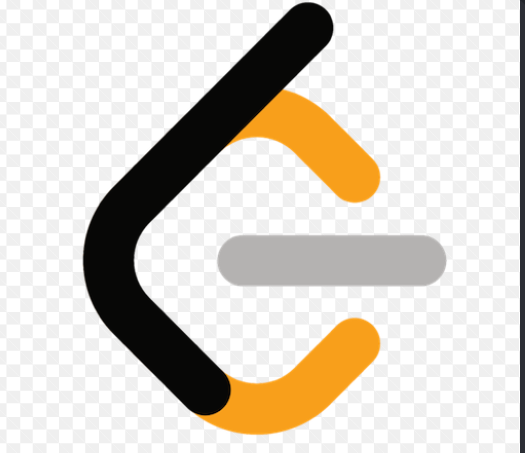

• ☕ Java — Object-oriented architecture and backend algorithms
• 🐍 Python — Automation scripts, logic building, and problem-solving
• 🐙 Git & GitHub — Version control, repository hosting, and open-source workflows
• 📝 VS Code — Primary integrated development environment (IDE)
• 🐚 Terminal / Bash — Environment automation and repository scripting
• 🧠 Data Structures & Algorithms — Algorithmic optimization and problem-solving
tracking
• 🎓 Kalvium HEROS — Real-time progress monitoring and work-integrated development metrics
• 🏆 LeetCode / CodeHelp — Continuous problem-solving consistency tracking
🔥 Daily Logic & Code Sandbox
🧩 DSA Focus: Deep diving into Arrays, Recursion, and Algorithms every single day.
🚀 Daily Commits: Shipping optimized Java & Python code daily without breaking the streak.
📊 Metrics Checked: Leveling up my technical milestones through continuous tracker analysis.
💻 Ecosystem: Built in VS Code, pushed via Terminal, tracked on LeetCode. Let's build!
⚡ Track my continuous problem-solving consistency on
